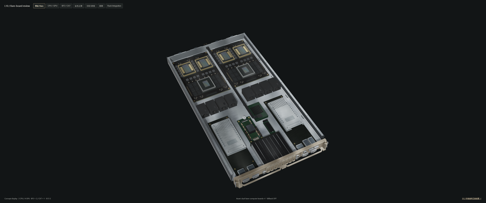
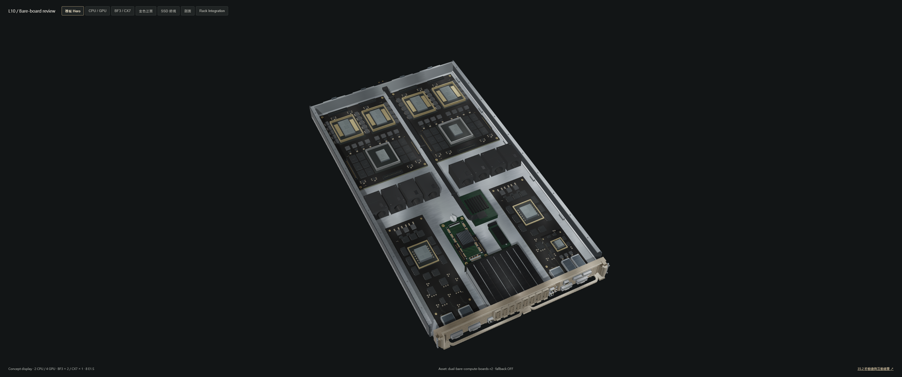
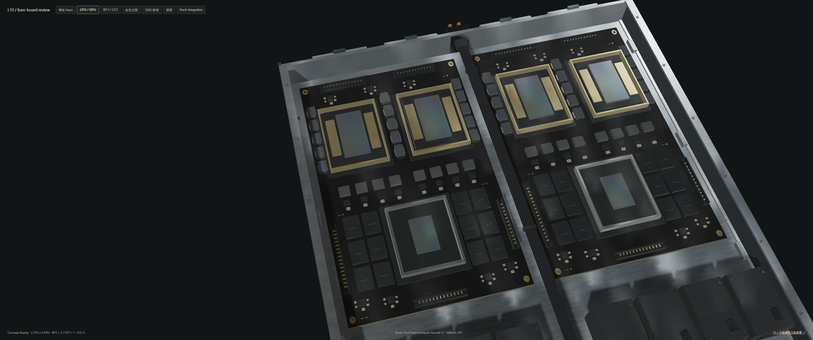
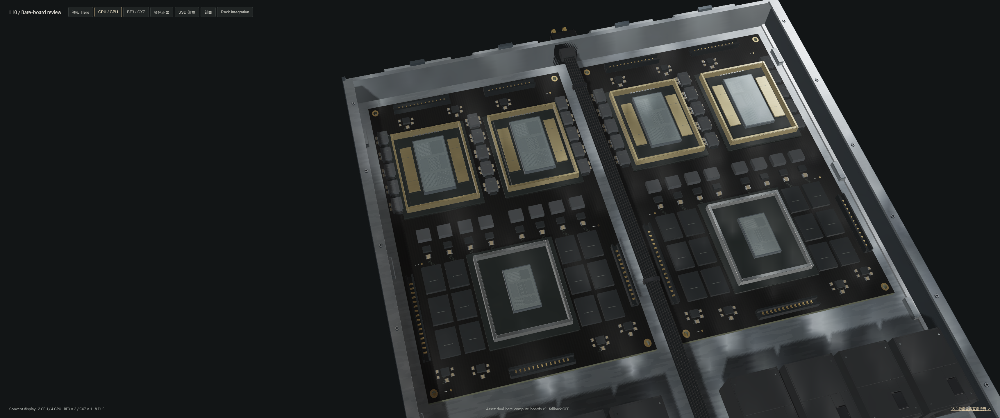
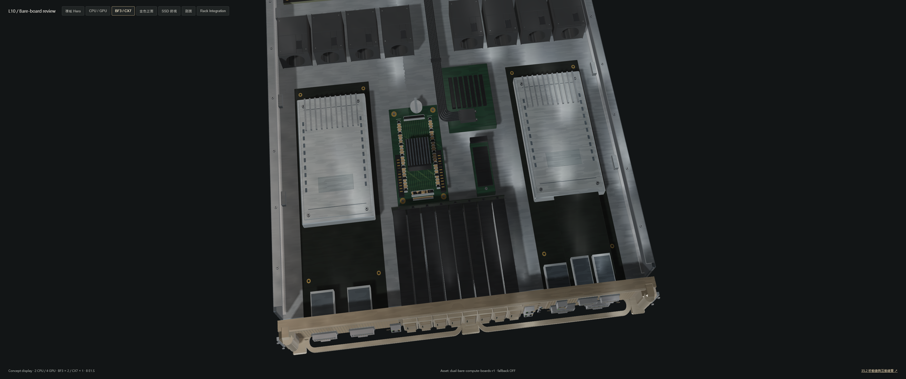
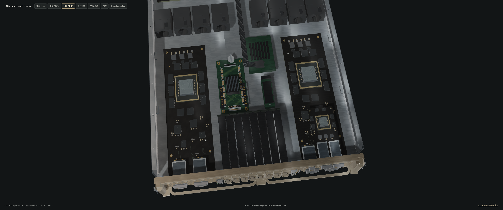
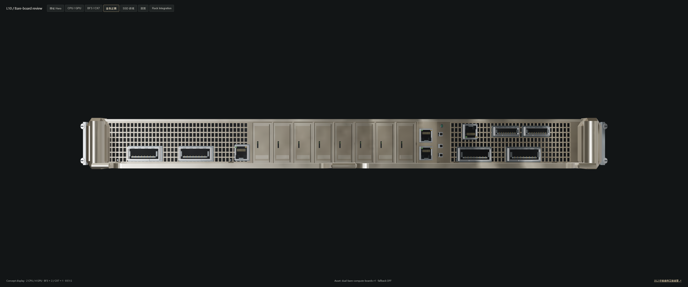
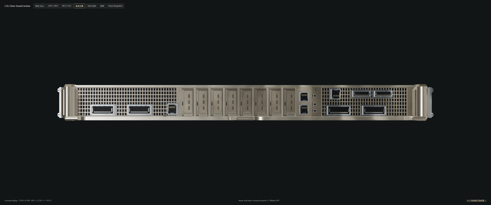

Each original PNG is 3440 × 1440. Both sides use identical current camera, lighting, exposure, progress and compiled shaders. Before geometry and GLB: 1611dd2. The current pipeline is deliberately shared; this isolates geometry and material changes and is not a historical renderer comparison. No AI-generated render, photo texture replacement or composited hardware is used.








Machine-readable evidence and performance. Passing these checks does not establish a photorealism score.